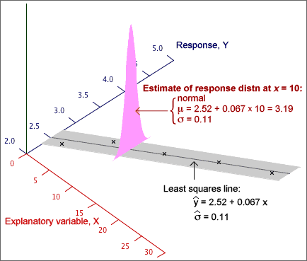

If you don't want to print now,
Does the response depend on X?
In a normal linear model, the response has a distribution whose mean, µy, depends linearly on the explanatory variable,
Y ~ normal (μy , σy)
If the slope parameter, β1, is zero, then the response has a normal distribution that does not depend on X.
Y ~ normal (β0 , σ)
This can be tested formally with a hypothesis test for whether β1 is zero.
Testing for zero slope
To assess whether the explanatory variable affects the response, we test the hypotheses
H0 : β1 = 0
HA : β1 ≠ 0
The test is based on how far the least squares slope, b1, is from zero. To assess this, we must take into account its standard deviation (standard error),

If we knew the value of σ, we could standardise b1 to get a test statistic,
standardised value, 
If β1 was really zero (H0), the probability of getting a least squares slope as far from zero as that recorded would be the p-value,

Unfortunately σ is usually unknown and the standard deviation of b1 must be estimated from the sample data. We therefore use a test statistic of the form
t ratio, 
and refer to a t distribution with n - 2 degrees of freedom to find the p-value.

The p-value is interpreted in the same way as for other hypothesis tests — a p-value close to zero means that the sample slope is far enough from zero to be inconsistent with H0: β1 = 0.
Examples

The test statistic and the p-value therefore both depend on both r and the sample size, n. Increasing n and increasing r both result in a lower p-value.

Properties of p-value
P-values for testing whether a linear model's slope is zero have the same properties as p-values for other hypothesis tests. In particular,
When Y and X are not related (β1 = 0), it is still possible to get small p-values, suggesting that β1 is not zero. However there is only probability 0.01 of getting a p-value as low as 0.01 — it is unlikely but possible. Such a p-value is more likely if the variables are related so we interpret it as giving strong evidence of a relationship.
A normal linear model provides a response distribution for all X. With estimates for all three model parameters, we can obtain the approximate response distribution at any x-value, even if we have no data at that x-value.

A formula for the standard error on the right exists, but you should rely on statistical software to find its value.
95% prediction interval for a new individual's response
For prediction, a similar interval is used:

where k is greater than the corresponding standard error for the confidence interval. Statistical software should again be used to find its value.
Example
The diagram below shows 95% confidence intervals for the mean response at x and 95% prediction intervals for a new response at x as bands for a small data set with n = 7 values.

Extrapolation
These 95% confidence intervals and 95% prediction intervals are valid within the range of x-values about which we have collected data, but they should not be relied on for extrapolation. Both intervals assume that the normal linear model describes the process, but we have no information about linearity beyond the x-values that have been collected.